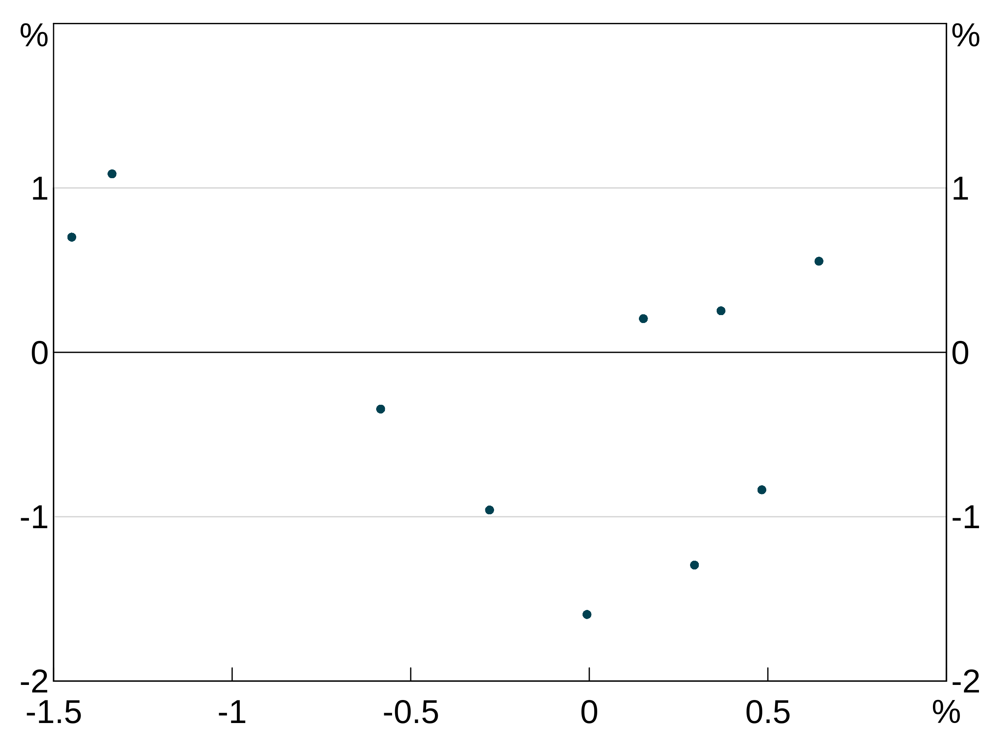
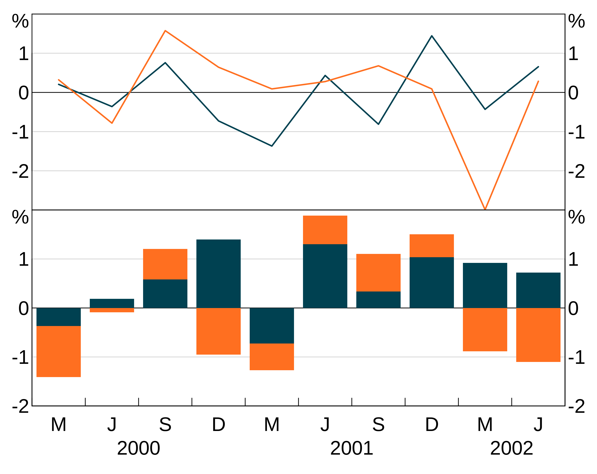
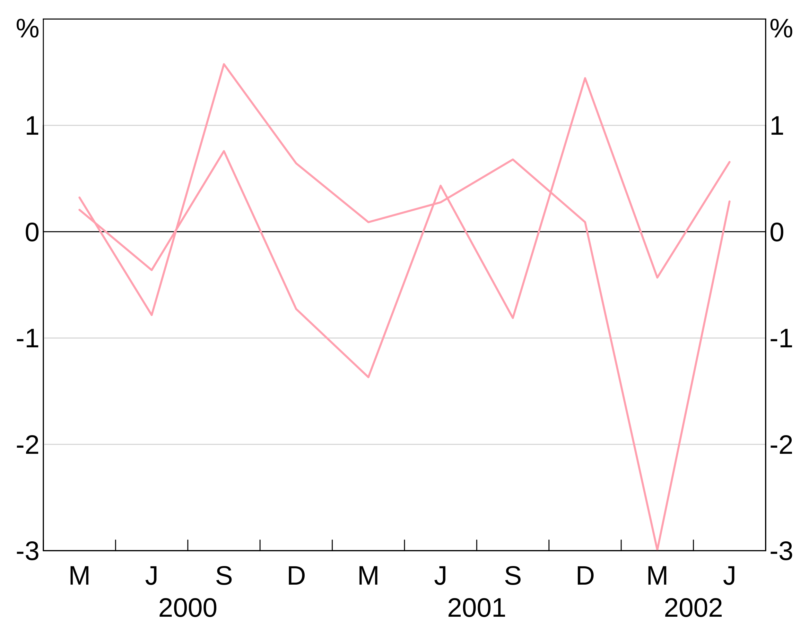
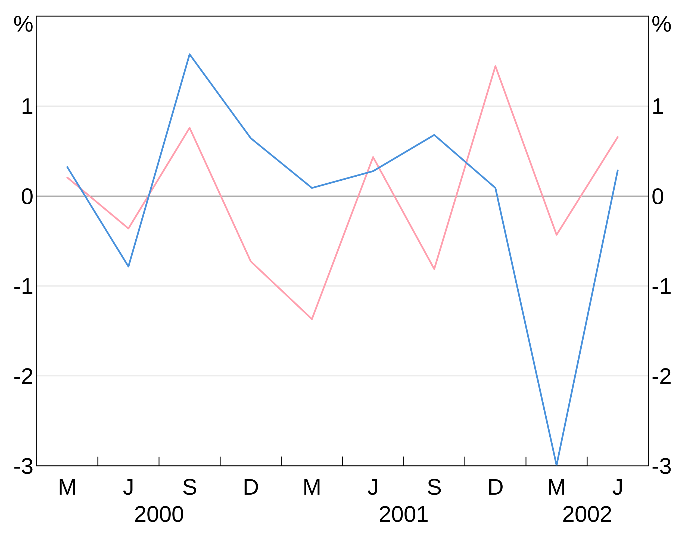
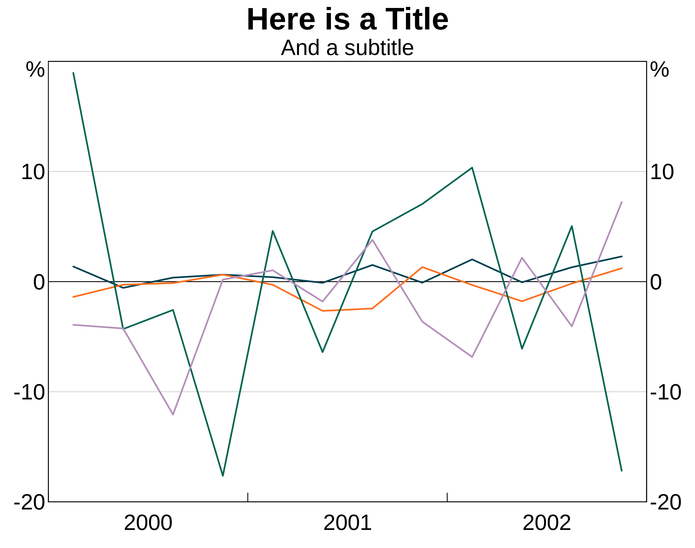
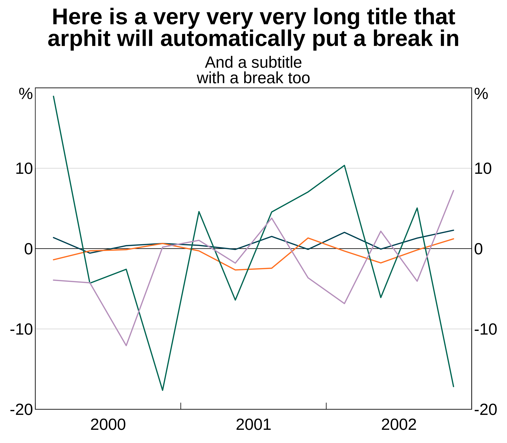
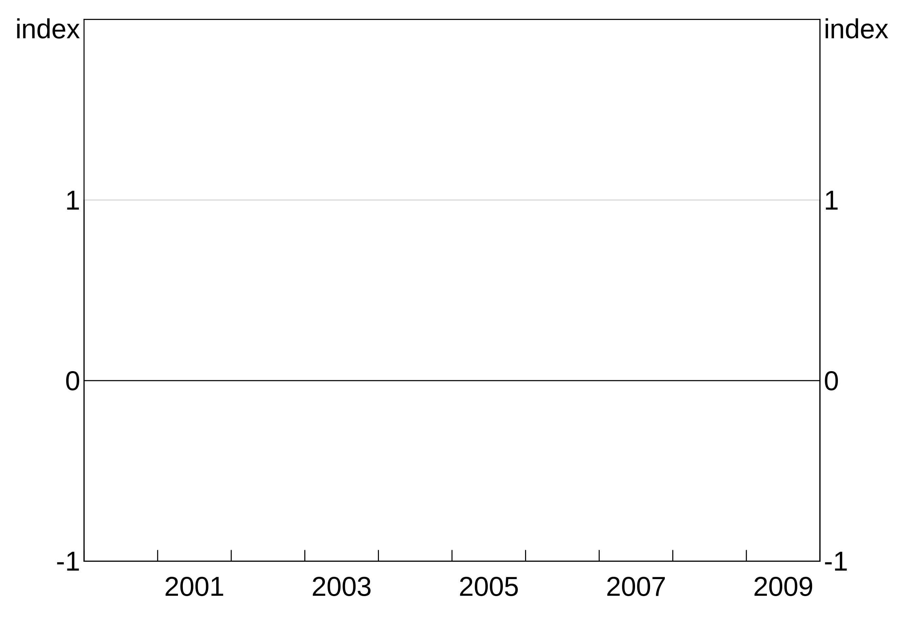
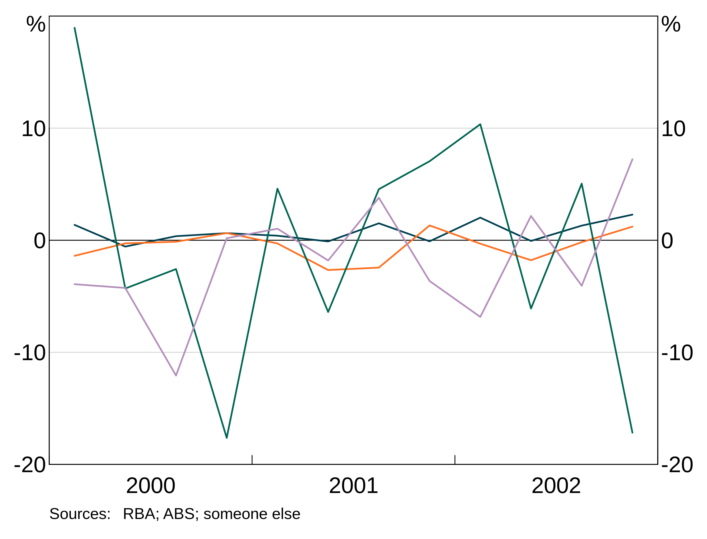
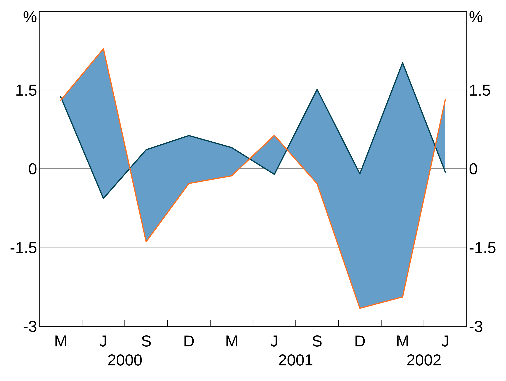
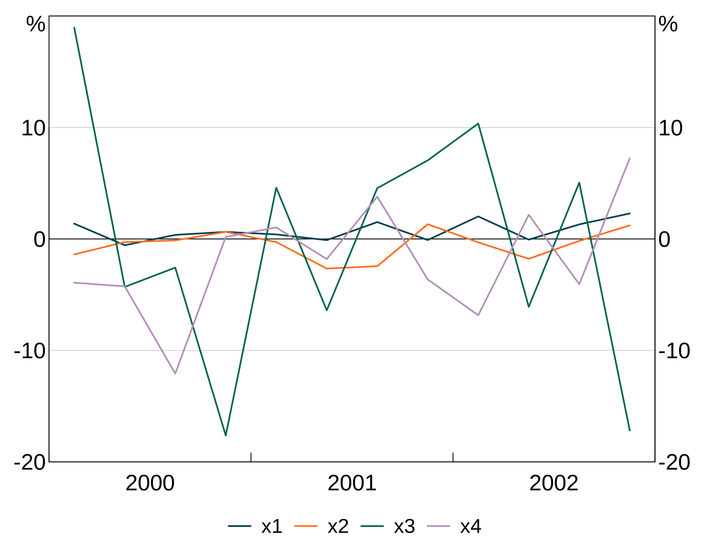

Plotting options
2019-05-10
plotting-options.RmdIntroduction
This vignette details all the plotting options available in arphit. If you are learning how to use arphit, you should read the getting started guide first.
Data types
tibbles and data.frames
simple_data <- data.frame(date = seq.Date(from = as.Date("2000-03-01"),
length.out = 10,
by = "quarter"),
y1 = rnorm(10),
y2 = rnorm(10),
y3 = rnorm(10),
y4 = rnorm(10))
long_data <- data.frame(date = rep(seq.Date(from = as.Date("2000-03-01"),
length.out = 10,
by = "quarter"), 2),
y1 = rnorm(20),
y2 = rnorm(20),
group_var = c(rep("A", 10), rep("B", 10)))
scatter_data <- data.frame(x = rnorm(10), y = rnorm(10))Layouts and panels
There are nine supported layouts, with up to 8 panels. Right hand side axes count as separate panels in some layouts. Panels are numbered from left to right, top to bottom.
- One-panel “1”. This is the default if you do not supply a value for
layout. Despite its name this layout has two panels. Panel “1” corresponds to the left axis; panel “2” corresponds to the right axis.

- Two-panel vertical “2v”. This layout has two panels, divided vertically. Panel “1” is the left panel, panel “2” the right.
- Two-panel horizontal “2h”. This layout has four panels. Panels “1” and “2” are the left and right axes of the top panel. “3” and “4” for the bottom.

- Two-by-two “2b2”. This layout is very similar to “2h”, except the left and right panels are divided, rather than axes.
- Three panel vertical “3v”:
6. Three panel horizontal “3h” (has left and right axes, like “2h”):
- Six panel three-by-two “3b2”:
- Four panel horizontal “4h” (has left and right axes like “2h”):
- Eight panel four-by-two “4b2”:
Portrait-size graphs
If you want a larger, portrait size layout, simply pass in portait = TRUE. This works with any of the layouts.
Layers and aesthetics
Aesthetic
An aesthetic is the definition of a layer. It tells arphit how to display the data.
x and y
The x and y variables speak for themselves. They must be variables in your dataset. (x values can be categorical). Aesthetics can also be expressions, rather than single variables - see the section on tidy evaluation below.
If your data are a ts, the x aesthetic does not need to specified, it is automatically the dates in the time series.
Inheriting aesthetics
Aesthetics inherit from their parent. That is, if you omit part of an aesthetic in the definition of a layer, it will inherit from the parent (if it exists). If you specify both a parent aesthetic and a layer aesthetic, the layer aesthetic overrides.
In this example, the whole aesthetic is inherited:

In this example, we specify thex aesthetic in the parent, but specify the y aesthetic in the layer. This is helpful if, for instance, you have many y variables you want to plot that all have the same x variable.

Groups
An aesthetic can also specify a group variable. This is used when your data is in long form and you have multiple observations on each x observation, corresponding to different variables. For instance, x might be the date column, y the column containing observations of the unemployment rate and group the column containing state identifiers.

Facets
An aesthetic can also specify a facet variable. facets work like groups, except that facets are split across panels (and so layers ignore if you give them a panel).
Data can have both groups and facets.
Ordering of graphs
By default, graphs are ordered by the value of their x-ticks (that is, either numerically or alphabetically, depending on what your x-ticks are).
You can instead specify a variable to order the graph by using the order part of the aesthetic.
Ordering a bar chart by value:
order_data <- data.frame(x=letters[1:10],
y=rnorm(10))
p <- arphitgg(order_data, agg_aes(x=x,y=y,order=y))
If you have groups and want to order by value, you need to specify which group’s value you want to use as the order. This will apply that order to every group.
order_data <- data.frame(x=letters[1:10],
y=rnorm(10),
group = c(rep("A",5),rep("B",5)))
p <- arphitgg(order_data, agg_aes(x=x,y=y,group=group,order=A))You can order in descending value using the desc function - see the section on tidy evaluation below. E.g.:
order_data <- data.frame(x=letters[1:10],
y=rnorm(10))
p <- arphitgg(order_data, agg_aes(x=x,y=y,order=dplyr::desc(y))) + agg_col()A third alternative way is to use another variable to define the order. In this example we take data and order it by a variable order that is the reverse of the x variable.
order_data <- data.frame(x = rep(letters[1:10], 2),
y = rep(1:10, 2),
group = c(rep("A", 10), rep("B", 10)),
order = rep(letters[10:1], 2),
stringsAsFactors = FALSE)
p <- arphitgg(order_data, agg_aes(x=x,y=y,group=group,order=order)) +
agg_col(stacked = FALSE)You can use a separate order variable with groups, but the ordering variable must uniquely associate with each x value and this ordering must be consistent across all groups. If not, otherwise the ordering of x values is ambiguous.
Tidy evaluation and aesthetics
Aesthetics support tidy evaluation. This means that your aesthetic can actually be an expression, which is evaluated in the environment of your data. This means you can undertake transformations of your data within how you define the aesthetic. The most common use for this is to order graphs in descending order:
order_data <- data.frame(x=letters[1:10],
y=rnorm(10),
group = c(rep("A",5),rep("B",5)))
p <- arphitgg(order_data, agg_aes(x=x,y=y,group=group,order=desc(A)))But you can use any expression you like, in any part of the aesthetic. For instance, we can easily create a quadratic:
Or we could group by a combination of two variables:
two_group_data <- data.frame(x=rep(c(1,2),4),
y=rnorm(8),
g1=c(rep("a",4),rep("b",4)),
g2=rep(c(1,1,2,2),2))Here g1 and g2 together define a unique group, so we set the group aesthetic to the interaction of both variables:
Layers
A layer is a series (or group of series) built from the same aesthetic. In arphit, layers must be assigned to a panel. You can have more than one layer per panel.
All require have four common arguments, and some layers have extra options to define their look:
- Data
- Aesthetic
- Panel (defaults to “1” if not supplied)
- Colour (optional)
NB: Layers will inherit data and aesthetic from their parent if omitted. This is helpful if you want to define multiple layers from the one dataset. (Example below)
You can assign the same layer to multiple panels in one call by specifying a vector of panel names. E.g. panel = c("1","2").
There are three types of layers, agg_line, agg_point and agg_col. These are used nearly identically to produce line, scatter and column graphs respectively:
p <- arphitgg(layout = "2h") +
agg_line(data = long_data, aes = agg_aes(x = date, y = y1, group = group_var), panel = "1") +
agg_col(data = long_data, aes = agg_aes(x = date, y = y2, group = group_var), panel = "3")
p <- arphitgg(layout = "1") +
agg_point(data = data.frame(x = rnorm(10), y = rnorm(10)), aes = agg_aes(x = x, y = y), panel = "1")
Layers will inherit data and aesthetic (or parts of the aesthetic) if these are left null in the layer specification. This is handy to save you from having to repeat yourself:
p <- arphitgg(long_data, aes = agg_aes(x = date, group = group_var), layout = "2h") +
agg_line(aes = agg_aes(y = y1), panel = "1") +
agg_col(aes = agg_aes(y = y2), panel = "3")
Line layers
agg_line layers convert data and an aesthetic into line series in the chosen panel (or, panels if you set a facet variable in the aesthetic).
There are 7 options for line layers. What the options do is covered in more detail below.
- The dataset to be drawn (
data) - The aesthetic that defines how to turn the data into a graph (
aes) - The colour (or colours) for the series (
colour) - Point markers for the series (
pch) - The line type - e.g. solid or dashed - for the sereis (
lty) - The linewidth of the lines (
lwd) - The size of the point markers (
pointsize). Only has any effect ifpchis not NA. - Which panel to plot the series on (
panel). This is ignored if the aesthetic defines a facet variable.
Column/bar layers
agg_col layers plot data as a vertical column graph. They have 6 options. What the options do is covered in more detail below.
- The aesthetic that defines how to turn the data into a graph (
aes) - The dataset to be drawn (
data) - The colour (or colours) for the series (
colour) - The colour for the outline of the bars (
barcol) - Which panel to plot the series on (
panel). This is ignored if the aesthetic defines a facet variable. - Whether the bars should be stacked (default) or grouped (
stacked). This is a global option; you cannot combine stacked and grouped layers.
Point/scatter layers
agg_point layers are just a wrapper around agg_line that set the line to NA, and the point marker (pch) to 19 for solid dots. Naturally, this layer type is best for scatter graphs, as they quicker and easier than constructing your own agg_line layer.
agg_point has only 5 options Data (data), aesthetic (aes), panel (panel), colour for the markers (colour) and a size for the points (pointsize). As with other layer types, data and aesthetic (including parts of an aesthetic) will be inherited from the parent if omitted.
Series colours and other attributes
Colours
Specifying line, bar or point (depending on layer type) colours for series is done when creating a layer. For instance:
p <- arphitgg() +
agg_line(data = simple_data, aes = agg_aes(x = date, y = y1), colour = RBA["Red1"])
This colour is applied to all series in the layer. This is less helpful when you have a group variable, since they will all show up as the same colour (which is unlikely to be what you want). E.g. this is not helpful:
p <- arphitgg() +
agg_line(data = long_data,
aes = agg_aes(x = date, y = y1, group = group_var),
colour = RBA["Red1"])
To specify for different colours for different series in a grouped layer, you can instead specify a vector of colours:
p <- arphitgg() +
agg_line(data = long_data,
aes = agg_aes(x = date, y = y1, group = group_var),
colour = c(RBA["Red1"], RBA["Blue4"]))
(NB: arphit will cycle through the supplied vector colours if there aren’t enough in the vector to cover the number of series in the layer.)
To see the full list of availble colours type vignette("rba-colours", package = "arphit").
Alternatively, you can use any colour that R recognises.
If you don’t specify colours, arphit cycles through a set of default colours. Should you need to (e.g. for labels) you can access the default colours using the alias RBA["Default1"] etc.
Line markers
pch allows you to add markers to your series. These directly follow the R options. These are specified like colours (setting one will apply it to all series in the layer, a vector will be cycled through).
Line type
lty allows you to control the line type - e.g. add dashing. These directly follow the R options. These are specified like colours (setting one will apply it to all series in the layer, a vector will be cycled through).
Line width
lwd controls the width of the line. 1 corresponds to default. 2 to twice default, 0.5 half it, etc. These are specified like colours (setting one will apply it to all series in the layer, a vector will be cycled through).
Bar outline
barcol lets you set the colour of the bar outline for agg_col layers. By default, this is NA, meaning no outline. These are specified like colours (setting one will apply it to all series in the layer, a vector will be cycled through).
Titles and subtitles
Titles and subtitles are added using agg_title and agg_subtitle respectively. The only required argument is the text for the title/subtitle:

arphit will automatically place linebreaks in long titles but may not be smart enough in all cases. You can insert linebreaks yourself as necessary by using “\n”.
p <- arphitgg() +
agg_title("Here is a very very very long title that arphit will automatically put a break in") +
agg_subtitle("And a subtitle\nwith a manual break too")
Panel titles and subtitles
You can add titles and subtitles to panels in much the same way as titles and subtitles. Allyou do is specify panel as an argument:
p <- arphitgg() +
agg_title("Panel title for panel 1", panel = "1") +
agg_subtitle("And a subtitle", panel = "1")You can also apply the same title to multiple panels at once using a vector of panel names panel = c("1","3").
Units
You can specify the units for your graph using the agg_units function. This can be used either with or without a panel specifier. If called without a panel specifier, the units are applied to all panels, otherwise the units are added only to specified panel:


You can also apply the same units to multiple panels at once using a vector of panel names panel = c("1","3").
Sources and footnotes
Adding sources and footnotes is done using agg_source and agg_footnote. You can pass in a single text string, or a vector of multiple strings. You can add as many agg_source/agg_footnote as you like:
p <- arphitgg() +
agg_source("Source 1") +
agg_source(c("Source 2 (as a vector)", "Source 3 (vectors are easy!")) +
agg_footnote("This is my first footnoote") +
agg_footnote("This is a second footnote")
Axis limits
Y axis
arphit will automatically guess axes for each panel. However, it is not smart enough to sensibly line up axes across panels (e.g. if you have left and right axes). And stacked bar graphs will confuse it.
Y-limits can be controlled with agg_ylim. This function takes three required arguments: a minimum, a maximum, and the number of steps to include. You can optionally include a panel identifier; if omitted, the limits will be applied to all panels. You can alternatively apply the same limits to a set of panels at once using a vector of panel names panel = c("1","3").

X axis
X-limits are controlled using agg_xlim. This is similar to y-limits, but only a minimum and maximum is required. For time series graphs, you can use part years if desired by adding decimal places (e.g. 2000.5).
As with the y-axis you can specify a panel identifier to apply the limits to a specific panel; if you omit the panel identifier, the limits will be applied to all panels. You can alternatively apply the same limits to a set of panels at once using a vector of panel names panel = c("1","3").
Very fine-grained control of x-ticks is not possible; x-ticks are determined by your x-variables.
You can specify only an upper or lower bound by setting the other the NA. For instance, to start the above graph at 2001 but let the data determine where to end it:
Time series graphs with data that gets close to the right hand axis will automatically add a small margin of spacing to the right hand side. You can stop this by setting a manual x-limit for the right hand side. Vertically divided time series graphs always add a margin.
close_data <- data.frame(date = seq.Date(as.Date("2000-03-01"),by="quarter",length.out=20),
y1 = rnorm(10))
p <- arphitgg(close_data, agg_aes(x=date, y=y1)) +
agg_line()For layouts with vertical division (e.g. “2v”, “2b2” etc), you can drop the the first tick of the right hand panel by setting dropxlabel = TRUE in arphitgg. This prevents the last label of the left hand panel overlapping the first of the right hand panel.
p <- arphitgg(simple_data, agg_aes(x=date, y=y1), layout = "2v", dropxlabel = TRUE) +
agg_line(panel = c("1","2"))By default categorical graphs have all their x ticks displayed. You can change this behaviour (if your x-ticks are overlapping) to only display an automatically determined limited set of x-ticks by setting showallxlabels = FALSE in the call to arphitgg:
foo <- data.frame(x=paste("label",1:9),y=1:9)
p <- arphitgg(foo, agg_aes(x=x,y=y), showallxlabels = FALSE) + agg_col()Frequency of x axis
For time series graphs, arphit will automatically choose the frequency of the ticks on the x axis. Any graph covering less than a year will use months, less than 3 years quarters and greater than 50 years decades. (Note that vertically divided graphs will swap to decades sooner, due to the compression of the x-axis).
decades_data <- data.frame(date = seq.Date(from=as.Date("1950-06-01"),by="year",length=50),
y1 = rnorm(50))
p <- arphitgg(decades_data, agg_aes(x=date, y=y1)) +
agg_line()Automatic x-limits respect the frequency. If your axis is in quarters or months, arphit will set the limits to the first and last quarter/month of data:
partial_quarter_data <- data.frame(date = seq.Date(from=as.Date("2000-03-01"),by="quarter",length=9),
y1 = rnorm(9))
p <- arphitgg(partial_quarter_data, agg_aes(x=date, y=y1)) +
agg_line()If you want override the automatically chosen frequency, you can use agg_xaxisfreq. Valid options are decade, year, quarter and month. You can specify panels too if desired.
Shading between series
You can shade the area between series by adding agg_shading.
Shading is drawn in the order you add it; the first shading added is on the bottom and subsequently added shading is drawn on top of this. Series are always drawn on top of shading.
p <- arphitgg(simple_data, agg_aes(x=date)) +
agg_line(agg_aes(y=y1)) +
agg_line(agg_aes(y=y2)) +
agg_shading(from = y1, to = y2, colour = RBA["Blue1"])
Multiple shading:
Plot annotations (labels, arrows and lines)
Adding labels and arrows
You can add series labels, and arrows to aid those labels, using agg_label and agg_arrow arguments.
agg_label takes 6 arguments - some are optional.
-
textis the label text. You can add line breaks in text using the\ncharacter. -
xandyspecify where (in the units on the plot) the centre of the label should be. For time series,xis in decimal years (i.e. 2000.5 is July 2, 2000). For categorical graphs, 1 corresponds to the first categories, 2 to the second, etc. -
panelspecifies which panel to place the label on. -
colouris self-explanatory; if not specified, defaults to black. -
sizeis optional and sets the font size. The default is 20.
Arrows are specified with agg_arrow.
-
tail.xandtail.yspecify the coordinates (in the units on the plot) of where to start the arrow at. -
head.xandhead.ywhere to finish the arrow (and where the arrow head is). -
panelspecifies which panel to place the arrow on. -
colouris self-explanatory. -
lwdis optional and specifies the linewidth of the arrow (default = 1).
(Experimental) Automatic labels
arphit has (experimental) functionality to automatically add series labels for you. If enabled, the auto labeller will run on panels with more than one series, and which do not already have text labels. If you manually set text labels for a panel, the auto labeller will skip that panel. By default, it will also add arrows from the label to the series if necessary for line series, but not for bar series. You can stop the autolabeller from adding arrows to line series (or have it add arrows to bars using the arguments arrow_lines and arrow_bars to agg_autolabel).
Series names
The auto labeller will use whatever your series are called in the data. For long data, this will be the value of the group variable. This is identical to how legends are determined. Series that appear in multiple panels are only labelled once. Series that have NA as their name are ignored by the autolabeller.
Enabling the auto labeller
Enable the auto labeller by adding agg_autolabel():
p <- arphitgg(long_data, agg_aes(x = date, y = y1, group = group_var)) +
agg_line() +
agg_autolabel()If you put text labels on a panel, that disables the auto labeller for that panel:
p <- arphitgg(long_data, agg_aes(x = date, y = y1, group = group_var), layout = "2v") +
agg_line(panel = "1") +
agg_line(panel = "2") +
agg_label("Manual\nlabel disables\nautolabels", x = 2001, y = 1.5, colour = "black", panel = "2") +
agg_autolabel()The autolabeller should correctly handle left and right hand series:
Adding horizonal and vertical lines
Horizontal and vertical lines are added using agg_abline. Horizontal lines are drawn by specifying the y variable _only; vertical the x variable only. You can also control the colour and line type. These are optional and default to a solid black line. You must also tell arphit which panel to put the line on.
The following example draws a vertical line at 2001 using the default colour and solid line. It also draws a horizontal line at -1 coloured darkred and dashed (lty = 2).
p <- arphitgg() +
agg_abline(x = 2001, panel = "1") +
agg_abline(y = -1, colour = "darkred", lty = 2, panel = "1")If you need more control over the line, you can specify the coordinates of the line segment instead of using x or y. To do so use x1, x2, y1 and y2 instead of x and y. All other options are the same. For example:
Entering NA (or omitting the argument) for any of x1, y1, x2, or y2 will set that coordinate to the axis limit (with x1 and y1 going to the left and bottom axes and x2 and y2 to the right and top).
Adding background shading
Background shading can be added using agg_bgshading. This draws a rectangle with bottom left corner at x1, y1 and top right corner at x2,y2. Passing NA for any of the four coordinates will set that coordinate to the axis limit - this is useful for creating shading that stretches across a whole panel. colour and panel are self-explanatory (colour is optional and defaults to light grey).
This example creates horizontal shading across the whole panel between -1 and 3 on the y axis.
And this two panel example repeats the above example for panel 1, but puts light green shading between two dates on the bottom panel.
Adding axis labels
You can add y and x axis labels to plots using agg_yaxislabel and agg_xaxislabel. These take the text for the axis label, plus an optional panel identifier. If omitted, the label is applied to all panels.
Joining and missing values
The joined argument inarphitgg controls how your graph behaves with missing values. When joined = TRUE (which is the default) the series will ignore the missing value and connect to the next non-missing value. When joined = FALSE the series will break.
For instance, let’s use this series, with the middle observation missing:
With joined = TRUE, the series continues straight across the missing value for 2002.
But when we set joined = FALSE, the series does not connect over the missing observation:
Adding a legend
You can add a legend to your graph by adding agg_legend(). This can also take one optional argument to specify how many columns to have with ncol; arphit will automatically guess if you leave it blank.

arphit will ignore duplicate series in multiple panels (i.e. it will only put in one legend entry).
If a series has NA as it’s name, it will not get a legend entry.
On-panel legend
You can also add the legend on the panel, instead of beneath the graph. This is done by specifying a location for the legend. There are two ways. The easiest is to choose one of “bottomright”, “bottom”, “bottomleft”, “left”, “topleft”, “top”, “topright”, “right” and “center”. Pass this to the optoinal x argument to agg_legend and the legend will be automatically placed in the appropriate location.
p <- arphitgg(long_data, agg_aes(x = date, y = y1, group = group_var)) +
agg_line() +
agg_legend(x="topright")
Multipanels are ignored for the purposes of on-panel legends - graphs are treated as a whole and panels are ignored. E.g. in a “2b2” graph, “topright” is the top right of the graph, meaning top right in panel “2”.
If you want fine-grained control, you can supply a value between 0 and 1 for x and a supply a y coordinate. This will place a legend in a specific place on the graph. (0,0) corresponds to the bottom left corner, (1,1) top right.
Saving to a file
To save your graph to a file instead of displaying it, use agg_draw with the optional filename command. arphit will determine what file to save as, based on the extension of your filename. png, emf, emf+, svg and pdf are supported. xlsx is as well, which exports the data (see below).
p <- arphitgg(simple_data, aes = agg_aes(x = date, y = y1)) +
agg_line()
agg_draw(p, filename = "my-graph.png")
agg_draw(p, filename = "my-graph.emf")
agg_draw(p, filename = "my-graph.svg")
agg_draw(p, filename = "my-graph.pdf")You can also use the newer EMFplus format by using extention .emf+. This will still write an emf file, but it is encoded as the newer EMF+ format.
You can also export to an XLSX, which will save your graph data in a nicely formatted spreadsheet. This can be convenient for archiving, or talking with other programs.
A note about EMF files
EMF files are problematic:
- EMF+ files do not render in paint or windows photo viewer properly, but will import fine into Word or PowerPoint (and looks fine when exported to PDF from Word).
- EMF files will not render if exported from Word as PDF; EMF+ will.
Additionally, only EMF+ files support partial transparency; EMF files do not.
If you can, you should prefer SVG over EMF. SVG is a much better supported vector image format. And much less problematic in how it is rendered by R.
Creating GIF animations
You can create a GIF animation by creating a list of arphitgg objects and using agg_slides. You can specify how many seconds each ‘slide’ should be shown for, and how many times the animation should loop (0 if infinitely). If you don’t supply a filename, it will open it externally.
Here we create a dataframe of four series over the same time period.
gif_data <- data.frame(
series = rep(1:4, each = 10),
x = rep(seq.Date(from = as.Date("2000-03-01"), by = "quarter",
length.out = 10)),
y = rnorm(4*10))We then split this into a list of four dataframes, one for each series and construct a graph for each series
gif_data_list <- split(gif_data, gif_data$series)
gg_list <- lapply(gif_data_list, function(data) {
arphitgg(data, agg_aes(x = x, y = y)) + agg_line()
})To create the GIF animation, just pass gg_list to agg_slides
You do need to be careful. The different scales can cause the graphs to be out of alignment. This could be solved by setting the same agg_ylim for each graph.
The graphs don’t need to be the same time series, that was just a convenient example. Here’s a gif going through the different possible layouts, but only 3 times.